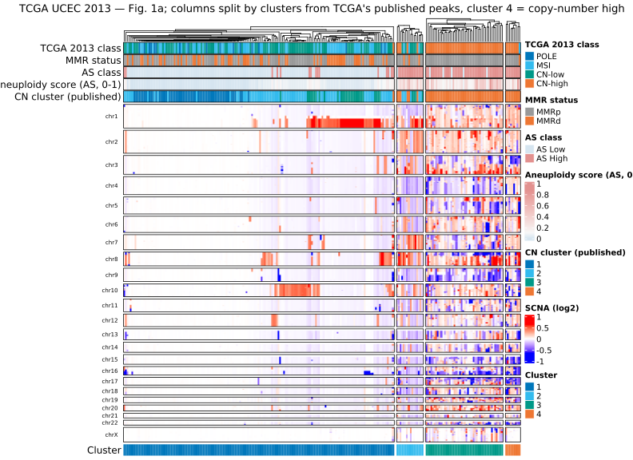
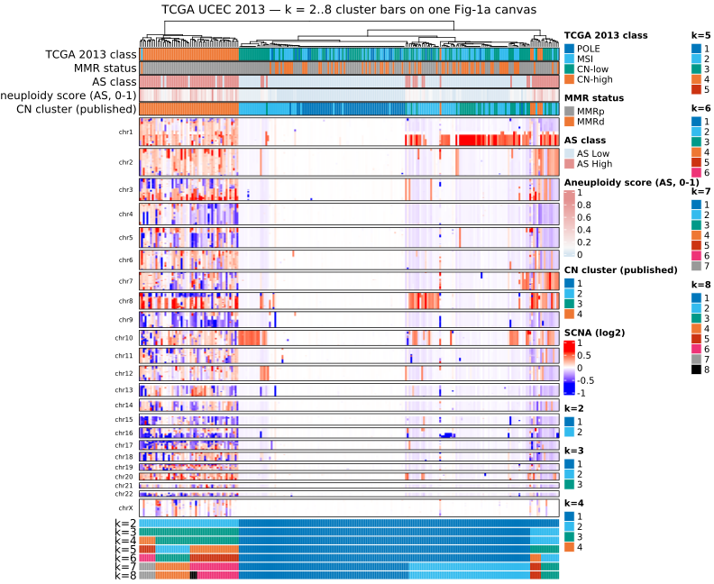
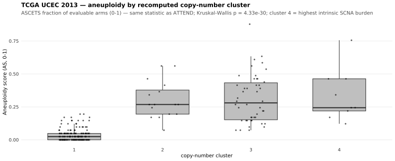

Last updated: 2026-09-25
Checks: 7 0
Knit directory:
attend_aneuploidy/analysis/
This reproducible R Markdown analysis was created with workflowr (version 1.7.2). The Checks tab describes the reproducibility checks that were applied when the results were created. The Past versions tab lists the development history.
Great! Since the R Markdown file has been committed to the Git repository, you know the exact version of the code that produced these results.
Great job! The global environment was empty. Objects defined in the global environment can affect the analysis in your R Markdown file in unknown ways. For reproduciblity it’s best to always run the code in an empty environment.
The command set.seed(20260622) was run prior to running
the code in the R Markdown file. Setting a seed ensures that any results
that rely on randomness, e.g. subsampling or permutations, are
reproducible.
Great job! Recording the operating system, R version, and package versions is critical for reproducibility.
Nice! There were no cached chunks for this analysis, so you can be confident that you successfully produced the results during this run.
Great job! Using relative paths to the files within your workflowr project makes it easier to run your code on other machines.
Great! You are using Git for version control. Tracking code development and connecting the code version to the results is critical for reproducibility.
The results in this page were generated with repository version 61b26bc. See the Past versions tab to see a history of the changes made to the R Markdown and HTML files.
Note that you need to be careful to ensure that all relevant files for
the analysis have been committed to Git prior to generating the results
(you can use wflow_publish or
wflow_git_commit). workflowr only checks the R Markdown
file, but you know if there are other scripts or data files that it
depends on. Below is the status of the Git repository when the results
were generated:
Ignored files:
Ignored: .Rhistory
Ignored: .Rproj.user/
Ignored: .mcr_cache/
Ignored: data/aneu_scores.csv
Ignored: data/attend_barcodes.csv
Ignored: data/attend_data.xlsx
Ignored: data/clinical_gianlu_data.csv
Ignored: data/cnv_annotations/
Ignored: data/gistic/
Ignored: data/hrd_scores.csv
Ignored: data/msi_scores.csv
Ignored: data/old2_gistic/
Ignored: data/old_gistic/
Ignored: data/seg/
Ignored: data/tcga_2013/
Ignored: data/tmb_scores.csv
Ignored: data/variant_annotations/
Ignored: gistic2.sif
Ignored: output/clean_data/
Ignored: output/gistic_input/
Untracked files:
Untracked: gistic_7050713.log
Untracked: gistic_7050714.log
Untracked: refgenefiles/
Note that any generated files, e.g. HTML, png, CSS, etc., are not included in this status report because it is ok for generated content to have uncommitted changes.
These are the previous versions of the repository in which changes were
made to the R Markdown (analysis/09-tcga2013-fig1a.Rmd) and
HTML (docs/09-tcga2013-fig1a.html) files. If you’ve
configured a remote Git repository (see ?wflow_git_remote),
click on the hyperlinks in the table below to view the files as they
were in that past version.
| File | Version | Author | Date | Message |
|---|---|---|---|---|
| Rmd | 0c4840a | bolt3x | 2026-09-14 | :art: One vocabulary, one order, and a page that says why a figure is missing |
| Rmd | d688d09 | bolt3x | 2026-09-13 | :art: One spelling and one palette per concept, across every report |
| Rmd | 2ab2dfa | bolt3x | 2026-09-13 | :bug: serous_in_top matched a string subtype_short never contains |
| Rmd | 793a8f2 | bolt3x | 2026-09-07 | :recycle: Reorder the site 00-11, split 07, fold concordance into 01, add ProMisE |
Question. Run on TCGA’s own data, does this pipeline’s Fig-1a reproduction recover TCGA’s published copy-number partition — and where do MMR status and aneuploidy sit on that figure? Cohort. TCGA UCEC 2013, every tumour carrying SNP6 segments. Reads. data/tcga_2013/ (data_cna_hg19.seg, the two clinical tables, pancan_aneuploidy.tsv), data/tcga_gistic_peaks_2013.tsv, and data/arm_boundaries_hg19.tsv. Out of scope. The ATTEND cohort and its cascade -> 07-molecular-classification. Why Euclidean / Ward.D2, and why the heatmap draws a different matrix from the one it clusters -> 00-methods.
This is 07-molecular-classification’s
figure, built the same way, on TCGA’s own tumours. It
exists because here the right answer is published: the
2013 study ships its own copy-number cluster assignment
(CNA_CLUSTER_K4), so the pipeline can be scored rather than
merely inspected. If it cannot recover TCGA’s partition on TCGA’s data,
report 07’s ATTEND clusters need a second look before they are
interpreted.
It also draws something the paper could not. TCGA 2013 has no per-sample aneuploidy score — the score used here is retrofitted from the later PanCancer-Atlas work — so the relationship between the four SCNA clusters and aneuploidy was never plotted. Every heatmap below carries an aneuploidy bar, and Part 4 makes the comparison explicit.
Two properties make this a cleaner test than report 07 can be:
-ta/-td/-conf, no reference
build). Here the peak list is TCGA’s own, from Supplementary Data File
S2.1, so the clustering feature involves no parameter guess and no
GISTIC run.What remains ours, and cannot be taken from the paper: the distance and linkage. The Supplementary Methods name none for the copy-number clustering, so this report uses the pipeline’s configured pair, exactly as report 07 does.
TCGA use two different matrices for this figure, and
keeping them apart is what makes it the paper’s figure rather than a
picture of a clustering input — 00-methods
sets out the rule. Both are built here from the same
data/tcga_2013/data_cna_hg19.seg.
The clustering feature is TCGA’s stated one (Suppl.
Methods S2): “thresholded relative copy number data in significantly
reoccurring amplifications or deletions regions identified by GISTIC
2.0.” published_peak_matrix_from_seg() takes, for each
sample × published peak, the length-weighted mean log2 seg-mean inside
the peak’s wide boundaries (a peak with no overlapping segment becomes
0, copy-neutral), then thresholds it, because S2 is
explicit that the clustering ran on thresholded and not continuous
values. The cut points are not published, so they are configuration here
and stated in the table below.
The display feature is what the Fig. 1a legend
describes: “SCNAs in each tumour (horizontal axis) plotted by
chromosomal location (vertical axis)” — the whole genome, on a
continuous colour scale. segments_to_bin_matrix() tiles the
same segments into 1 Mb bins genome-wide using the hg19 arm table for
chromosome lengths and order, taking the length-weighted mean
Segment_Mean per sample × bin, uncovered genome = 0.
# |x| < 0.1 -> 0 ; 0.1 <= |x| < 0.9 -> +-1 (low-level) ; |x| >= 0.9 -> +-2 (high-level).
# NOT TCGA's cut points, which were never published — hence stated on the page, not buried.
thr_cuts <- c(0.1, 0.9)
# RESTRICT TO TCGA'S OWN CORE SET. data_clinical_sample.txt carries DATA_CORE_SAMPLE (Y/N),
# and the missing integrated SUBTYPE tracks it EXACTLY: 141 of 373 samples are non-core and
# all 141 are the ones with no subtype, while all 232 core samples have one. So the gap is
# TCGA's study design, not a hole in our export -- see the prose above. Set to FALSE to draw
# the paper's own denominator (all tumours with copy number, n = 363) at the cost of an
# unlabelled third of the annotation.
core_only <- TRUE
tcga_clin <- tryCatch(load_tcga_ucec_2013(), error = function(e) tibble())
tcga_seg <- tryCatch(load_tcga_2013_seg(), error = function(e) tibble())
peaks <- tryCatch(load_tcga_published_peaks(), error = function(e) tibble())
# hg19, NOT the pipeline default: these are SNP6 segments on hg19 coordinates.
arms19 <- tryCatch(load_arm_boundaries(build = "hg19"), error = function(e) NULL)
have_seg <- nrow(tcga_seg) > 0
have_peaks <- nrow(peaks) > 0
# Kept unfiltered for the cohort-cost comparison in Part 3 — restricting the cohort changes
# the clustering, so the price of `core_only` has to be measured, not assumed.
tcga_seg_all <- tcga_seg
tcga_clin_all <- tcga_clin
if (core_only && nrow(tcga_clin) > 0 && "core_sample" %in% names(tcga_clin)) {
keep_ids <- tcga_clin$ID[tcga_clin$core_sample %in% TRUE]
n_before <- nrow(tcga_clin)
tcga_clin <- tcga_clin |> filter(ID %in% keep_ids)
if (have_seg) tcga_seg <- tcga_seg |> filter(ID %in% keep_ids)
cat("Restricted to TCGA's core set (DATA_CORE_SAMPLE = Y):", nrow(tcga_clin), "of",
n_before, "tumours. The", n_before - nrow(tcga_clin), "dropped are exactly the ones",
"with no integrated subtype.\n")
} else if (core_only) {
cat("core_only = TRUE but no DATA_CORE_SAMPLE column is available —",
"drawing every tumour with copy number.\n")
}Restricted to TCGA's core set (DATA_CORE_SAMPLE = Y): 232 of 373 tumours. The 141 dropped are exactly the ones with no integrated subtype.# CLUSTERING matrix — thresholded, peak-restricted (S2's feature space).
clust_mat <- if (have_seg && have_peaks)
published_peak_matrix_from_seg(tcga_seg, peaks, threshold = thr_cuts) else NULL
# DISPLAY matrix — continuous, genome-wide (the Fig-1a body).
disp_mat <- if (have_seg && !is.null(arms19))
segments_to_bin_matrix(tcga_seg, arms19) else NULL
# Drop bins on chromosomes this cohort has NO segments for at all.
# segments_to_bin_matrix() fills uncovered genome with 0 = copy-neutral, which is the right
# assumption for a gap inside a chromosome that WAS assayed and the wrong one for a whole
# chromosome that never was: the hg19 arm table carries chrY, this is a uterine cohort with
# zero chrY segments, and its all-zero chrY bins would render as a white "no alteration" block
# instead of "not applicable". Driven by the cohort's own coverage, not a chrY special case.
if (!is.null(disp_mat)) {
covered <- unique(paste0("chr", str_remove(as.character(tcga_seg$Chromosome), "^chr")))
bin_chr <- str_extract(setdiff(names(disp_mat), "ID"), "^chr[0-9XY]+")
drop_b <- setdiff(names(disp_mat), "ID")[!bin_chr %in% covered]
if (length(drop_b)) {
disp_mat <- disp_mat |> select(-all_of(drop_b))
cat("Dropped", length(drop_b), "genome bins on chromosome(s) with no segments in this",
"cohort:", paste(sort(unique(str_extract(drop_b, "^chr[0-9XY]+"))), collapse = ", "),
"— all-zero bins there would read as 'no alteration' rather than 'not assayed'.\n")
}
}Dropped 60 genome bins on chromosome(s) with no segments in this cohort: chrY — all-zero bins there would read as 'no alteration' rather than 'not assayed'.# cat(), not message() — see note_skip() in attend_plots.R for why (message = FALSE).
if (!have_seg)
cat("**No TCGA segments** (data/tcga_2013/data_cna_hg19.seg) —",
"run `Rscript code/fetch_tcga_ucec_2013.R`. Every panel below is skipped.\n")
if (have_seg && !have_peaks)
cat("**No published peak list** (data/tcga_gistic_peaks_2013.tsv) —",
"the clustering feature cannot be built.\n")
if (have_seg && is.null(arms19))
cat("**No hg19 arm table** (data/arm_boundaries_hg19.tsv) —",
"the genome-wide display matrix cannot be built; the heatmap will fall back.\n")Both matrices side by side, so the difference between what is clustered and what is drawn is a number on the page rather than a claim in prose. The row counts are the point: a few dozen peaks against a few thousand genome bins.
if (!is.null(clust_mat) || !is.null(disp_mat)) {
knitr::kable(tibble(
role = c("clustered", "displayed"),
matrix = c("published GISTIC peaks, THRESHOLDED",
"1 Mb genome bins, CONTINUOUS"),
samples = c(if (is.null(clust_mat)) NA_integer_ else nrow(clust_mat),
if (is.null(disp_mat)) NA_integer_ else nrow(disp_mat)),
features = c(if (is.null(clust_mat)) NA_integer_ else ncol(clust_mat) - 1L,
if (is.null(disp_mat)) NA_integer_ else ncol(disp_mat) - 1L),
provenance = c(paste0("Suppl. Data File S2.1 peaks; cut at ",
paste(thr_cuts, collapse = "/")),
"data_cna_hg19.seg tiled on arm_boundaries_hg19.tsv"),
caption_note = c("Suppl. Methods S2 feature space", "Fig. 1a legend")),
caption = paste0("The two matrices. Only the first is clustered; only the second is ",
"drawn. Both come from the same hg19 segment file."))
} else cat("Matrix summary skipped — no segments.\n")| role | matrix | samples | features | provenance | caption_note |
|---|---|---|---|---|---|
| clustered | published GISTIC peaks, THRESHOLDED | 232 | 79 | Suppl. Data File S2.1 peaks; cut at 0.1/0.9 | Suppl. Methods S2 feature space |
| displayed | 1 Mb genome bins, CONTINUOUS | 232 | 3053 | data_cna_hg19.seg tiled on arm_boundaries_hg19.tsv | Fig. 1a legend |
The cohort as TCGA classified it, which is also the annotation stack
for the heatmap. Every column here is TCGA’s own published
field, not a call of ours: the integrative subtype, the
MSI-derived MMR status, and the published copy-number cluster.
Aneuploidy is the one exception and is flagged as such — it is
retrofitted from the PanCancer-Atlas table
(pancan_aneuploidy.tsv, a count of altered arms,
0–39), or from ASCETS run on these same segments when
code/run_ascets_tcga.sh has been run, which puts it on
ATTEND’s own 0–1 scale. Whichever is used is named in the table.
Why a third of the cohort has no integrated subtype, and why
it is dropped here. The missing SUBTYPE is not a
hole in this export — it is TCGA’s study design, and the sample table
proves it. DATA_CORE_SAMPLE is Y for
232 of 373 samples and N for
141, and those 141 non-core samples are
exactly the 141 with no subtype: zero disagreements in either
direction. The integrated classification required the full multiplatform
data (exome, methylation, mRNA, miRNA), which only the core set has; the
remaining 141 tumours carry SNP6 copy number and were never
integratively classified. TCGA’s published cross-tabulation shows the
same boundary — Copy-number high (Serous-like) is
60/60 inside published cluster 4,
MSI (Hyper-mutated) spreads across clusters 1–3 (22/31/10)
with only 2 in cluster 4, and the 141 non-core tumours sit outside all
of it.
core_only above therefore restricts to TCGA’s own core
set rather than to a criterion of ours, and the count is printed so the
denominator is never implicit. Set it to FALSE to recover
the paper’s own denominator — Fig. 1a used every tumour with copy
number.
⚠️ The restriction is not free, and Part 3 measures what it costs. Dropping the non-core tumours removes the unclassified annotation block, but it also re-clusters a third fewer tumours, and on this cohort that degrades the reproduction sharply: agreement with TCGA’s published partition falls and the published serous-like tumours stop concentrating in the highest-burden cluster. The distance × cohort table in Part 3 prints both, so the trade is visible on the page rather than buried in a flag.
TP53 is absent from this report’s annotation stack,
unlike report 07’s. data/tcga_2013/ carries clinical tables
and segments only — no mutation calls — so there is nothing to build a
TP53 bar from, and an all-NA bar is dropped rather than drawn as an
empty row.
tcga_ascets <- tryCatch(load_tcga_2013_ascets(), error = function(e) tibble())
use_ascets <- nrow(tcga_ascets) > 0
aneu_tbl <- if (use_ascets) {
tcga_ascets |> transmute(ID, aneuploidy_value = ascets_aneuploidy)
} else if (nrow(tcga_clin) > 0) {
tcga_clin |> transmute(ID, aneuploidy_value = aneuploidy)
} else NULL
aneu_label <- if (use_ascets)
"ASCETS fraction of evaluable arms (0-1) — same statistic as ATTEND" else
"PanCancer-Atlas arm COUNT (0-39, Taylor 2018) — NOT ATTEND's scale"
if (nrow(tcga_clin) > 0) {
knitr::kable(tibble(
field = c("tumours with clinical data", "with a published CN cluster",
"with an integrative subtype", "MMR-deficient (TCGA's MSI cluster)",
"POLE-ultramutated", "with an aneuploidy value"),
n = c(nrow(tcga_clin),
sum(!is.na(tcga_clin$cn_cluster_k4)),
sum(!is.na(tcga_clin$subtype_short)),
sum(tcga_clin$mmrd %in% TRUE),
sum(tcga_clin$pole %in% TRUE),
if (is.null(aneu_tbl)) 0L else sum(is.finite(aneu_tbl$aneuploidy_value)))),
caption = paste0("TCGA UCEC 2013 as published. Aneuploidy source: ", aneu_label,
". A third of the cohort has no integrative subtype — it was assigned ",
"to the core set only — which is why the heatmap legends the missing ",
"category explicitly instead of leaving it an unlabelled grey."))
} else cat("Cohort table skipped — no clinical data.\n")| field | n |
|---|---|
| tumours with clinical data | 232 |
| with a published CN cluster | 232 |
| with an integrative subtype | 232 |
| MMR-deficient (TCGA’s MSI cluster) | 65 |
| POLE-ultramutated | 17 |
| with an aneuploidy value | 365 |
The clustering runs on the thresholded peak matrix
with the pipeline’s configured cut, distance and linkage, and the
copy-number-high cluster is named from that matrix’s own SCNA burden
(cnv_high_cluster_burden(), mean |value| per cluster) so it
never sees the aneuploidy score. The annotation frame is keyed by sample
barcode, which is what fig1a_heatmap() indexes its columns
by.
cl <- if (!is.null(clust_mat) && nrow(clust_mat) >= k_cnv)
cluster_arm_matrix(clust_mat, k = k_cnv, method = cnv_method, dist_method = cnv_dist) else NULL
high_cluster <- if (!is.null(cl)) cnv_high_cluster_burden(cl) else NA_integer_
# ORDER THE CLUSTERS BY SCNA BURDEN — the paper's x-axis. cutree() numbers clusters by order
# of first appearance in the dendrogram, so the heatmap blocks come out in a sequence that
# means nothing; Fig. 1a runs quiet -> high, left -> right. Relabelling is presentation only
# (the partition is untouched, and ARI is label-invariant), but it is what makes the figure
# read as the paper's, and it makes cluster numbers comparable to TCGA's published 1..4 and
# to report 07's ATTEND clusters. `high_cluster` is TRANSLATED rather than assumed to be k:
# it comes from cnv_high_cluster_burden() on the PEAK matrix, and whether the pipeline's own
# rule agrees with the display-matrix ordering is exactly what Part 3 checks.
if (!is.null(cl) && !is.null(disp_mat)) {
dm0 <- as.matrix(disp_mat[, setdiff(names(disp_mat), "ID"), drop = FALSE])
rownames(dm0) <- disp_mat$ID
rl <- relabel_clusters_by_burden(cl$cluster, dm0)
cl$cluster <- rl$cluster
cl$assignment$cnv_cluster <- unname(rl$map[as.character(cl$assignment$cnv_cluster)])
if (!is.na(high_cluster)) high_cluster <- unname(rl$map[as.character(high_cluster)])
cat("Clusters relabelled by ascending SCNA burden (mean |log2| on the display matrix):\n")
print(round(sort(rl$burden), 4))
}Clusters relabelled by ascending SCNA burden (mean |log2| on the display matrix):
2 1 4 3
0.0356 0.1870 0.2074 0.2468 ann <- NULL
if (!is.null(cl)) {
ids <- rownames(cl$matrix)
ann <- data.frame(CN_cluster = factor(cl$cluster[ids]), row.names = ids)
if (nrow(tcga_clin) > 0) {
grab <- function(col) tcga_clin[[col]][match(ids, tcga_clin$ID)]
ann$TCGA_class <- factor(as.character(grab("subtype_short")),
levels = levels(tcga_clin$subtype_short))
mm <- grab("mmrd")
ann$MMR <- factor(ifelse(is.na(mm), NA_character_, ifelse(mm, "MMRd", "MMRp")),
levels = c("MMRp", "MMRd"))
# TCGA's OWN partition as a bar, so agreement with the recomputed clusters beneath is
# readable by eye. Same cluster colours as the bottom bar (see .fig1a_covariate_cols):
# "recomputed 3" and "published 3" are the same colour on purpose.
ann$Published_CN_cluster <- factor(as.character(grab("cn_cluster_k4")),
levels = as.character(1:4))
}
if (!is.null(aneu_tbl))
ann$Aneuploidy <- aneu_tbl$aneuploidy_value[match(ids, aneu_tbl$ID)]
cat("Clustered", nrow(cl$matrix), "tumours on", ncol(cl$matrix),
"published peaks;", cnv_dist, "distance +", cnv_method, "linkage, k =", k_cnv,
"\nHighest-burden (copy-number-high) cluster:", high_cluster, "\n")
} else cat("Clustering skipped — need the thresholded peak matrix.\n")Clustered 232 tumours on 79 published peaks; euclidean distance + ward.D2 linkage, k = 4
Highest-burden (copy-number-high) cluster: 4 The figure. Rows are the 1 Mb genome bins ordered by chromosomal location and split by chromosome; columns are tumours, split by the peak-based clusters and ordered within each split by dendrogram; the body is the continuous log2 landscape, red for gain and blue for loss. The colour limit is the 98th percentile of |value|, so a handful of extreme amplifications cannot wash the whole panel out. The annotation bars, top to bottom, are TCGA’s integrative subtype, its MMR status, its published copy-number cluster, and aneuploidy as a binary split plus the continuous score. If the hg19 arm table is missing this falls back to drawing the thresholded peak matrix and says so — that fallback is not Fig. 1a, and the label on the panel states it rather than leaving the reader to infer it.
hm_mat <- NULL
if (!is.null(cl) && !is.null(disp_mat)) {
dm <- as.matrix(disp_mat[, setdiff(names(disp_mat), "ID"), drop = FALSE])
rownames(dm) <- disp_mat$ID
dm <- dm[rownames(dm) %in% names(cl$cluster), , drop = FALSE] # clustered tumours only
if (nrow(dm) >= 2) hm_mat <- dm else
cat("The bin matrix shares", nrow(dm), "samples with the clustering — falling back.\n")
}
if (!is.null(cl)) {
if (!is.null(hm_mat)) {
hm_vtype <- "continuous"
hm_label <- "genome-wide continuous SCNA (1 Mb bins) — the Fig-1a display"
feat_pos <- feature_positions(colnames(hm_mat)) # "chr1:0" bins carry their own coords
} else {
hm_mat <- cl$matrix
hm_vtype <- "thresholded"
hm_label <- "FALLBACK: thresholded published peaks (no hg19 bin matrix) — not Fig. 1a"
pk_cyto <- if (have_peaks) peaks |> distinct(peak_id, cytoband) |> tibble::deframe() else NULL
feat_pos <- feature_positions(colnames(hm_mat), cytoband = pk_cyto)
}
# WHY-IS-THERE-NO-HEATMAP gate. fig1a_heatmap() returns invisible(NULL) on several
# conditions, each announced only with message() — which opts_chunk (message = FALSE)
# swallows, so the figure just silently fails to appear. Whichever line reads FALSE / 0
# below is the reason.
cat("Fig-1a preconditions",
"\n displaying :", hm_label,
"\n ComplexHeatmap installed :", requireNamespace("ComplexHeatmap", quietly = TRUE),
"\n circlize installed :", requireNamespace("circlize", quietly = TRUE),
"\n display (samples x feat) :", nrow(hm_mat), "x", ncol(hm_mat),
"\n clustered on :", nrow(cl$matrix), "x", ncol(cl$matrix), "peaks",
"\n feature positions mapped :", sum(feat_pos$feature %in% colnames(hm_mat)),
"\n annotation bars :", if (is.null(ann)) 0L else ncol(ann), "\n")
fig1a_heatmap(hm_mat, feat_pos, cl$cluster, ann_col = ann, value_type = hm_vtype,
main = paste0("TCGA UCEC 2013 — Fig. 1a; columns split by clusters from ",
"TCGA's published peaks, cluster ", high_cluster,
" = copy-number high"))
} else cat("Heatmap skipped — no clustering.\n")Fig-1a preconditions
displaying : genome-wide continuous SCNA (1 Mb bins) — the Fig-1a display
ComplexHeatmap installed : TRUE
circlize installed : TRUE
display (samples x feat) : 232 x 3053
clustered on : 232 x 79 peaks
feature positions mapped : 3053
annotation bars : 5 
The same canvas with the cluster assignment at every k from 2 to 8
stacked beneath it. The dendrogram is computed once and cut repeatedly,
so the partitions are nested and can share one figure: reading a column
downward shows how that tumour’s label subdivides as k grows. Here it
answers a question report 07 cannot — TCGA fixed k = 4 and published the
result, so the Published_CN_cluster bar above is the
reference the sweep can be read against.
if (!is.null(cl) && exists("hm_mat") && exists("feat_pos")) {
# ksweep intersects rownames(mat) with hc$labels itself, so the genome-wide display matrix
# and the peak-learned dendrogram line up with no extra handling.
fig1a_heatmap_ksweep(hm_mat, feat_pos, cl$hclust, k_range = k_sweep, ann_col = ann,
value_type = hm_vtype,
main = paste0("TCGA UCEC 2013 — k = ", min(k_sweep), "..", max(k_sweep),
" cluster bars on one Fig-1a canvas"))
} else cat("k-sweep skipped — no clustering.\n")
The test the whole report exists for. Agreement is scored with the adjusted Rand index, which is chance-corrected and so is not inflated by cluster-size imbalance, over the tumours carrying a published assignment.
Two columns qualify the answer and belong beside it rather than after
it. burden_pick is the cluster
cnv_high_cluster_burden() names as copy-number-high;
best_overlap is the cluster that actually overlaps
published cluster 4 (TCGA’s serous-like group) most. The burden rule is
a heuristic — greatest mean |value| — and on
thresholded features mean |value| counts a deep deletion and a high
amplification identically, so a small deletion-heavy cluster can outrank
the genuinely serous-like one. When the two disagree the
heuristic has failed, and since report 07 uses that same rule
on ATTEND, where no published answer exists to catch it, this is the
only place the failure is visible at all.
scored <- NULL
if (!is.null(cl) && nrow(tcga_clin) > 0 && any(!is.na(tcga_clin$cn_cluster_k4))) {
pub <- tcga_clin |> filter(!is.na(cn_cluster_k4)) |>
transmute(ID, published = as.character(cn_cluster_k4))
j <- cl$assignment |> inner_join(pub, by = "ID")
if (nrow(j) > 0) {
f1 <- function(tp, fp, fn) round(2 * tp / max(1, 2 * tp + fp + fn), 3)
best <- j |> filter(published == "4") |> count(cnv_cluster) |>
slice_max(n, n = 1, with_ties = FALSE)
bo <- if (nrow(best)) as.character(best$cnv_cluster[1]) else NA_character_
scored <- tibble(
n_scored = nrow(j),
ARI = round(adjusted_rand_index(j$cnv_cluster, j$published), 3),
burden_pick = as.character(high_cluster),
burden_F1_vs_pub4 = f1(sum(j$cnv_cluster == high_cluster & j$published == "4"),
sum(j$cnv_cluster == high_cluster & j$published != "4"),
sum(j$cnv_cluster != high_cluster & j$published == "4")),
best_overlap = bo,
best_F1_vs_pub4 = if (is.na(bo)) NA_real_ else
f1(sum(j$cnv_cluster == bo & j$published == "4"),
sum(j$cnv_cluster == bo & j$published != "4"),
sum(j$cnv_cluster != bo & j$published == "4")),
heuristic_ok = !is.na(bo) && identical(as.character(high_cluster), bo))
knitr::kable(scored, caption = paste0(
"Recomputed clusters scored against TCGA's published CNA_CLUSTER_K4. ",
"heuristic_ok = FALSE means the greatest-mean-|value| serous rule picked the wrong ",
"cluster on this cohort, which is a warning about report 07's use of the same rule."))
}
}| n_scored | ARI | burden_pick | burden_F1_vs_pub4 | best_overlap | best_F1_vs_pub4 | heuristic_ok |
|---|---|---|---|---|---|---|
| 232 | 0.3 | 4 | 0.254 | 3 | 0.852 | FALSE |
if (is.null(scored)) cat("Scoring skipped — needs the clustering and CNA_CLUSTER_K4.\n")The contingency behind that index: recomputed clusters as rows, TCGA’s published clusters as columns. A concentrated off-diagonal block is the recovery the ARI summarises as one number; mass spread across a row means that recomputed cluster has no published counterpart, which a single index cannot show.
if (!is.null(scored)) {
pub <- tcga_clin |> filter(!is.na(cn_cluster_k4)) |>
transmute(ID, published = as.character(cn_cluster_k4))
j <- cl$assignment |> inner_join(pub, by = "ID")
knitr::kable(as.data.frame.matrix(table(recomputed = j$cnv_cluster, published = j$published)),
caption = "Recomputed (rows) vs TCGA's published CNA_CLUSTER_K4 (columns).")
} else cat("Contingency skipped.\n")| 1 | 2 | 3 | 4 |
|---|---|---|---|
| 58 | 74 | 28 | 1 |
| 0 | 6 | 4 | 6 |
| 0 | 0 | 0 | 46 |
| 0 | 0 | 0 | 9 |
The distance metric is the one thing the paper does not fix, and on
this feature space the choice is not cosmetic — this table is why the
pipeline uses Euclidean rather than the 1 − Pearson
pair S2 names for its mRNA and methylation clusterings.
Correlation distance is undefined for a flat profile,
and a copy-number-quiet tumour is flat at every one of the 79 peaks, so
cluster_arm_matrix() must drop those samples rather than
invent a distance for them. TCGA’s published cluster 1 is the
quiet cluster (mean |log2| 0.0043 against 0.216 for cluster 4), so
correlation discards most of the one cluster it would most need to
recover — and the heatmap loses the large pale block Fig. 1a plainly
has. Under Euclidean a flat sample is not undefined; it sits near the
origin, which is the correct geometry for “no alteration”. Both
distances run on the identical matrix, each burden-ordered, so the
choice is re-measured here on every knit instead of asserted in
prose.
if (!is.null(clust_mat) && nrow(clust_mat) >= k_cnv &&
nrow(tcga_clin) > 0 && any(!is.na(tcga_clin$cn_cluster_k4)) && !is.null(disp_mat)) {
pub_m <- tcga_clin |> filter(!is.na(cn_cluster_k4)) |>
transmute(ID, published = as.character(cn_cluster_k4))
dmm <- as.matrix(disp_mat[, setdiff(names(disp_mat), "ID"), drop = FALSE])
rownames(dmm) <- disp_mat$ID
# Two axes, because both were choices: the configured distance against the metric it
# replaced, and the configured cohort against the paper's own denominator. Each cell is a
# full re-clustering, so the table keeps re-earning both choices on every knit rather than
# asserting them once in prose. unique() in case the two distances ever coincide.
pub_all <- tcga_clin_all |> filter(!is.na(cn_cluster_k4)) |>
transmute(ID, published = as.character(cn_cluster_k4))
grid <- expand.grid(dm = unique(c(cnv_dist, "correlation")),
core = c(TRUE, FALSE), stringsAsFactors = FALSE)
rows <- lapply(seq_len(nrow(grid)), function(i) {
dm <- grid$dm[i]; co <- grid$core[i]
sg <- if (co) tcga_seg_all |> filter(ID %in% tcga_clin_all$ID[tcga_clin_all$core_sample %in% TRUE])
else tcga_seg_all
cmx <- published_peak_matrix_from_seg(sg, peaks, threshold = thr_cuts)
if (is.null(cmx) || nrow(cmx) < k_cnv) return(NULL)
cc <- cluster_arm_matrix(cmx, k = k_cnv, method = cnv_method, dist_method = dm)
if (is.null(cc)) return(NULL)
lab <- relabel_clusters_by_burden(cc$cluster, dmm)$cluster
jj <- tibble(ID = names(lab), new = as.character(lab)) |> inner_join(pub_all, by = "ID")
if (!nrow(jj)) return(NULL)
# ⚠️ NOT grepl("Serous", subtype_short). `subtype_short` holds the SHORT labels —
# POLE / MSI / CN-low / CN-high (attend_tcga_ref_2013$subtype_short) — so the word
# "Serous" appears in the LONG level name and never in this column. That match returned
# character(0) on every row, which made serous_in_top structurally 0 in all four cells
# of the table below whatever the data said: a column that cannot vary, sitting beside
# ARI and diagonal_pct as though it were evidence. Keyed off the config now, so a label
# edit moves both at once instead of silently emptying this one.
ser_lab <- unname(attend_tcga_ref_2013$subtype_short[["Copy-number high (Serous-like)"]])
# which(): 141 of 373 tumours have no subtype, so the bare comparison is a logical with
# NAs, and x[<logical with NA>] returns an NA element per NA rather than dropping it —
# 60 real ids padded to 201. %in% ignores NA so the count still came out right, which is
# exactly why it would have survived unnoticed.
ser <- tcga_clin_all$ID[which(as.character(tcga_clin_all$subtype_short) == ser_lab)]
tibble(distance = dm,
cohort = if (co) "core only" else "all with CN",
clustered = nrow(cc$matrix),
dropped_flat = nrow(cmx) - nrow(cc$matrix),
scored = nrow(jj),
ARI = round(adjusted_rand_index(jj$new, jj$published), 3),
diagonal_pct = round(100 * mean(jj$new == jj$published), 1),
pub_cluster1_kept = sum(jj$published == "1"),
serous_in_top = sum(jj$new == as.character(k_cnv) & jj$ID %in% ser))
})
rows <- rows[!vapply(rows, is.null, logical(1))]
if (length(rows)) knitr::kable(bind_rows(rows), caption = paste0(
"Distance x cohort, every cell a full re-clustering, all burden-ordered. dropped_flat ",
"counts tumours a correlation metric cannot place; pub_cluster1_kept is how many of ",
"TCGA's quiet cluster survive to be scored; serous_in_top is how many published ",
"serous-like tumours land in the highest-burden cluster. diagonal_pct is interpretable ",
"only because every partition is burden-ordered — on raw cutree labels it would be ",
"meaningless. Read the `core only` rows against `all with CN`: restricting the cohort ",
"removes the unclassified annotation block but re-clusters a third fewer tumours, and ",
"that is a cost, not a free tidy-up."))
} else cat("Metric comparison skipped — needs the peak matrix, the display matrix and CNA_CLUSTER_K4.\n")| distance | cohort | clustered | dropped_flat | scored | ARI | diagonal_pct | pub_cluster1_kept | serous_in_top |
|---|---|---|---|---|---|---|---|---|
| euclidean | core only | 232 | 0 | 232 | 0.300 | 31.5 | 58 | 8 |
| correlation | core only | 172 | 60 | 172 | 0.334 | 49.4 | 2 | 55 |
| euclidean | all with CN | 365 | 0 | 363 | 0.423 | 64.7 | 86 | 51 |
| correlation | all with CN | 281 | 84 | 280 | 0.222 | 41.1 | 7 | 54 |
Aneuploidy per recomputed cluster. This is the panel the 2013 paper
could not draw: it had no per-sample aneuploidy score, so the
relationship between its SCNA clusters and aneuploidy was never shown.
The value is whichever source Part 1 named, and it is
not a clustering feature — the clustering saw only
thresholded peak calls — so alignment between the high-burden cluster
and the high-aneuploidy tumours is corroboration rather than
circularity. attend_box() picks the mark per cluster from
the data, box and points where a cluster holds at least ten tumours and
a median crossbar below that, and prints n in every case.
aneu_cl <- if (!is.null(cl) && !is.null(aneu_tbl)) {
cl$assignment |>
left_join(aneu_tbl, by = "ID") |>
filter(is.finite(aneuploidy_value)) |>
mutate(cluster = factor(cnv_cluster))
} else NULL
if (!is.null(aneu_cl) && nrow(aneu_cl) > 0 && dplyr::n_distinct(aneu_cl$cluster) > 1) {
kw <- suppressWarnings(stats::kruskal.test(aneuploidy_value ~ cluster, data = aneu_cl))
ggplot(aneu_cl, aes(cluster, aneuploidy_value)) +
attend_box(aneu_cl, x = "cluster", y = "aneuploidy_value") +
labs(title = "TCGA UCEC 2013 — aneuploidy by recomputed copy-number cluster",
subtitle = paste0(aneu_label, "; Kruskal-Wallis p = ", signif(kw$p.value, 3),
"; cluster ", high_cluster, " = highest intrinsic SCNA burden"),
x = "copy-number cluster", y = attend_as_axis) +
attend_theme()
} else cat("Aneuploidy-by-cluster skipped — needs clusters and aneuploidy values.\n")
MMR status across the clusters, as counts and as a test. TCGA’s MMR call here is its MSI (hyper-mutated) integrative cluster, so this asks whether the copy-number clustering separates MMR-deficient tumours — and the expected answer is that it largely does not, since MMR deficiency and broad copy-number change are different routes to a genomic extreme. Fisher is used rather than chi-square because a 4 × 2 table on this cohort has thin cells, and it is simulated when an exact computation would be too large.
mmr_cl <- if (!is.null(cl) && nrow(tcga_clin) > 0) {
cl$assignment |>
left_join(tcga_clin |> transmute(ID, mmrd, pole, subtype_short), by = "ID") |>
filter(!is.na(mmrd)) |>
mutate(cluster = factor(cnv_cluster),
MMR = factor(ifelse(mmrd, "MMRd", "MMRp"), levels = c("MMRp", "MMRd")))
} else NULL
if (!is.null(mmr_cl) && nrow(mmr_cl) > 0 && dplyr::n_distinct(mmr_cl$cluster) > 1) {
tab <- table(cluster = mmr_cl$cluster, MMR = mmr_cl$MMR)
ft <- suppressWarnings(tryCatch(stats::fisher.test(tab, simulate.p.value = TRUE, B = 1e5),
error = function(e) NULL))
knitr::kable(as.data.frame.matrix(tab), caption = paste0(
"MMR status (TCGA's MSI integrative cluster) by recomputed copy-number cluster",
if (!is.null(ft)) paste0(". Fisher exact p = ", signif(ft$p.value, 3),
" (simulated, B = 1e5)") else "."))
} else cat("MMR-by-cluster skipped — needs clusters and MMR calls.\n")| MMRp | MMRd |
|---|---|
| 100 | 61 |
| 13 | 3 |
| 46 | 0 |
| 8 | 1 |
The same cross-tabulation against TCGA’s full integrative subtype, which is the direct statement of what the copy-number clustering does and does not recover: the CN-high and CN-low subtypes were defined from copy number and should separate, while the MSI and POLE subtypes were defined from mutation and need not. Rows are the recomputed clusters, so reading across a row shows what that cluster is made of. Tumours with no published subtype (about a third of the cohort — it was assigned to the core set only) appear as their own column rather than being dropped, so the denominators stay honest.
if (!is.null(mmr_cl) && nrow(mmr_cl) > 0) {
st <- cl$assignment |>
left_join(tcga_clin |> transmute(ID, subtype_short), by = "ID") |>
mutate(cluster = factor(cnv_cluster),
subtype = factor(ifelse(is.na(as.character(subtype_short)), "not classified",
as.character(subtype_short)),
levels = c(levels(tcga_clin$subtype_short), "not classified")))
knitr::kable(as.data.frame.matrix(table(recomputed = st$cluster, subtype = st$subtype)),
caption = paste0("Recomputed copy-number clusters (rows) against TCGA's ",
"published integrative subtype (columns). CN-high and CN-low ",
"were defined from copy number and should separate; MSI and ",
"POLE were not and need not."))
} else cat("Subtype cross-tabulation skipped.\n")| POLE | MSI | CN-low | CN-high | not classified |
|---|---|---|---|---|
| 17 | 61 | 82 | 1 | 0 |
| 0 | 3 | 8 | 5 | 0 |
| 0 | 0 | 0 | 46 | 0 |
| 0 | 1 | 0 | 8 | 0 |
sessionInfo()R version 4.3.2 (2023-10-31)
Platform: x86_64-pc-linux-gnu (64-bit)
Running under: Rocky Linux 9.5 (Blue Onyx)
Matrix products: default
BLAS/LAPACK: FlexiBLAS OPENBLAS; LAPACK version 3.11.0
locale:
[1] LC_CTYPE=C.UTF-8 LC_NUMERIC=C LC_TIME=C.UTF-8
[4] LC_COLLATE=C.UTF-8 LC_MONETARY=C.UTF-8 LC_MESSAGES=C.UTF-8
[7] LC_PAPER=C.UTF-8 LC_NAME=C LC_ADDRESS=C
[10] LC_TELEPHONE=C LC_MEASUREMENT=C.UTF-8 LC_IDENTIFICATION=C
time zone: Europe/Rome
tzcode source: system (glibc)
attached base packages:
[1] stats graphics grDevices utils datasets methods base
other attached packages:
[1] data.table_1.18.4 fs_2.1.0 here_1.0.2 lubridate_1.9.5
[5] forcats_1.0.1 stringr_1.6.0 dplyr_1.2.1 purrr_1.0.2
[9] readr_2.2.0 tidyr_1.3.2 tibble_3.3.1 ggplot2_4.0.3
[13] tidyverse_2.0.0
loaded via a namespace (and not attached):
[1] shape_1.4.6.1 circlize_0.4.15 gtable_0.3.6
[4] rjson_0.2.23 xfun_0.58 bslib_0.9.0
[7] GlobalOptions_0.1.4 tzdb_0.5.0 Cairo_1.6-2
[10] vctrs_0.7.3 tools_4.3.2 generics_0.1.4
[13] stats4_4.3.2 parallel_4.3.2 cluster_2.1.6
[16] pkgconfig_2.0.3 RColorBrewer_1.1-3 S4Vectors_0.40.2
[19] S7_0.2.2 lifecycle_1.0.5 compiler_4.3.2
[22] farver_2.1.2 git2r_0.33.0 codetools_0.2-19
[25] ComplexHeatmap_2.18.0 clue_0.3-65 httpuv_1.6.12
[28] htmltools_0.5.9 sass_0.4.10 yaml_2.3.12
[31] later_1.4.8 pillar_1.11.1 crayon_1.5.3
[34] jquerylib_0.1.4 whisker_0.4.1 cachem_1.1.0
[37] magick_2.8.1 iterators_1.0.14 foreach_1.5.2
[40] tidyselect_1.2.1 digest_0.6.39 stringi_1.8.7
[43] labeling_0.4.3 rprojroot_2.1.1 fastmap_1.2.0
[46] grid_4.3.2 colorspace_2.1-2 cli_3.6.6
[49] magrittr_2.0.5 dichromat_2.0-0.1 withr_3.0.3
[52] scales_1.4.0 promises_1.5.0 bit64_4.8.6
[55] timechange_0.4.0 rmarkdown_2.31 matrixStats_1.1.0
[58] bit_4.6.0 otel_0.2.0 workflowr_1.7.2
[61] GetoptLong_1.0.5 png_0.1-8 hms_1.1.4
[64] evaluate_1.0.5 knitr_1.51 IRanges_2.36.0
[67] doParallel_1.0.17 rlang_1.2.0 Rcpp_1.1.1-1.1
[70] glue_1.8.1 BiocGenerics_0.48.1 rstudioapi_0.15.0
[73] vroom_1.7.1 jsonlite_2.0.0 R6_2.6.1
sessionInfo()R version 4.3.2 (2023-10-31)
Platform: x86_64-pc-linux-gnu (64-bit)
Running under: Rocky Linux 9.5 (Blue Onyx)
Matrix products: default
BLAS/LAPACK: FlexiBLAS OPENBLAS; LAPACK version 3.11.0
locale:
[1] LC_CTYPE=C.UTF-8 LC_NUMERIC=C LC_TIME=C.UTF-8
[4] LC_COLLATE=C.UTF-8 LC_MONETARY=C.UTF-8 LC_MESSAGES=C.UTF-8
[7] LC_PAPER=C.UTF-8 LC_NAME=C LC_ADDRESS=C
[10] LC_TELEPHONE=C LC_MEASUREMENT=C.UTF-8 LC_IDENTIFICATION=C
time zone: Europe/Rome
tzcode source: system (glibc)
attached base packages:
[1] stats graphics grDevices utils datasets methods base
other attached packages:
[1] data.table_1.18.4 fs_2.1.0 here_1.0.2 lubridate_1.9.5
[5] forcats_1.0.1 stringr_1.6.0 dplyr_1.2.1 purrr_1.0.2
[9] readr_2.2.0 tidyr_1.3.2 tibble_3.3.1 ggplot2_4.0.3
[13] tidyverse_2.0.0
loaded via a namespace (and not attached):
[1] shape_1.4.6.1 circlize_0.4.15 gtable_0.3.6
[4] rjson_0.2.23 xfun_0.58 bslib_0.9.0
[7] GlobalOptions_0.1.4 tzdb_0.5.0 Cairo_1.6-2
[10] vctrs_0.7.3 tools_4.3.2 generics_0.1.4
[13] stats4_4.3.2 parallel_4.3.2 cluster_2.1.6
[16] pkgconfig_2.0.3 RColorBrewer_1.1-3 S4Vectors_0.40.2
[19] S7_0.2.2 lifecycle_1.0.5 compiler_4.3.2
[22] farver_2.1.2 git2r_0.33.0 codetools_0.2-19
[25] ComplexHeatmap_2.18.0 clue_0.3-65 httpuv_1.6.12
[28] htmltools_0.5.9 sass_0.4.10 yaml_2.3.12
[31] later_1.4.8 pillar_1.11.1 crayon_1.5.3
[34] jquerylib_0.1.4 whisker_0.4.1 cachem_1.1.0
[37] magick_2.8.1 iterators_1.0.14 foreach_1.5.2
[40] tidyselect_1.2.1 digest_0.6.39 stringi_1.8.7
[43] labeling_0.4.3 rprojroot_2.1.1 fastmap_1.2.0
[46] grid_4.3.2 colorspace_2.1-2 cli_3.6.6
[49] magrittr_2.0.5 dichromat_2.0-0.1 withr_3.0.3
[52] scales_1.4.0 promises_1.5.0 bit64_4.8.6
[55] timechange_0.4.0 rmarkdown_2.31 matrixStats_1.1.0
[58] bit_4.6.0 otel_0.2.0 workflowr_1.7.2
[61] GetoptLong_1.0.5 png_0.1-8 hms_1.1.4
[64] evaluate_1.0.5 knitr_1.51 IRanges_2.36.0
[67] doParallel_1.0.17 rlang_1.2.0 Rcpp_1.1.1-1.1
[70] glue_1.8.1 BiocGenerics_0.48.1 rstudioapi_0.15.0
[73] vroom_1.7.1 jsonlite_2.0.0 R6_2.6.1